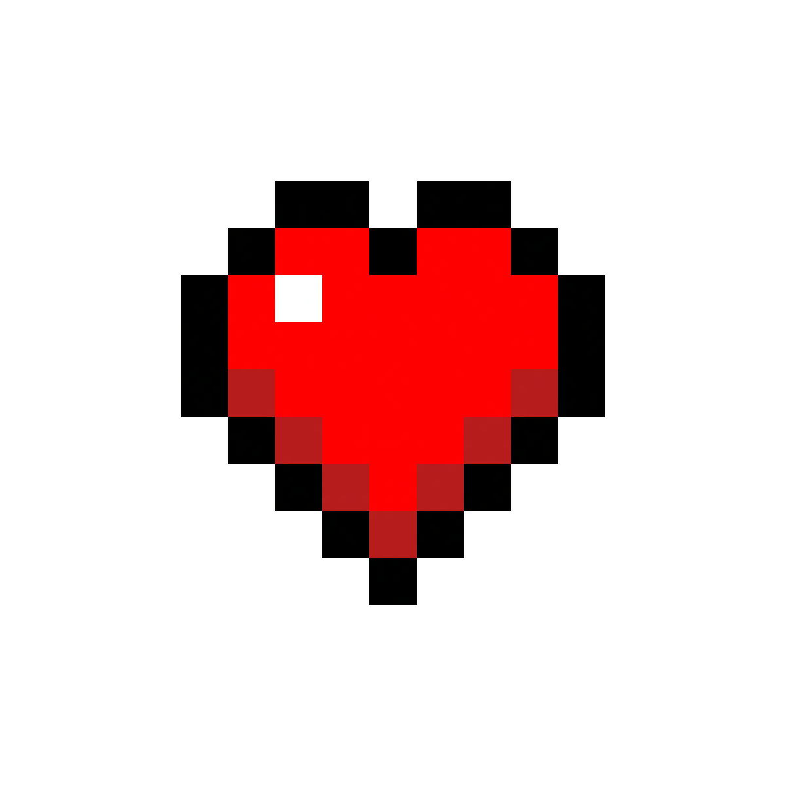

GALERIA DEL
EQUIPO

INTEGRANTES DEL EQUIPO
Cada tarjeta se genera automáticamente desde team.js.
Haz clic en una tarjeta para ver el perfil completo.
INSTRUCCIONES
Sigue estos 10 pasos para unirte al proyecto. Todos trabajan sobre el mismo repositorio — cada quien en su propio branch.
CLONA EL REPOSITORIO
El instructor te dará acceso al repositorio en GitHub. Una vez que tengas acceso, clónalo a tu computadora:
git clone https://github.com/USUARIO/Teamwork.git
cd Teamwork
CREA TU BRANCH
Antes de hacer cambios, crea una rama nueva con el formato:
git checkout -b feature/pagina-nombre-apellido
feature/pagina-juan-perez
CREA TU AVATAR
Abre avatar-builder.html en tu navegador o haz clic en
"CREA TU AVATAR" arriba. Diseña tu skin pixel-art y copia el
código de 64 caracteres que genera.
EDITA TEAM.JS
Abre js/team.js y busca el comentario
"AGREGA TU LINEA AQUI ABAJO". Copia el template y llena
todos los campos con tus datos.
{
name: "Tu Nombre",
page: "pages/nombre-apellido.html",
tagline: "Una frase sobre ti",
avatar: "TU_CODIGO_DE_64_CHARS",
github: "https://github.com/tu-user", // Con este link el sistema jalará tus stats reales
about: "Un párrafo sobre ti.",
skills: ["Skill1", "Skill2", "Skill3"],
randomFact: "Dato curioso",
biome: "forest"
},
CREA TU PAGINA PERSONAL
Copia el archivo pages/_plantilla.html y renómbralo
con tu nombre. Ejemplo: pages/juan-perez.html.
page que pusiste en team.js.
(OPCIONAL) ELIGE TU BIOMA
En tu objeto de team.js, el campo biome
define el fondo de tu página personal. Las opciones son:
biome: "forest" // Bosque
biome: "desert" // Desierto
biome: "jungle" // Selva tropical
biome: "taiga" // Taiga / Invierno
biome: "plains" // Praderas / Otoño
biome: "nether" // El Nether
biome: "end" // The End
biome: "night" // Bosque Nocturno
VERIFICA EN TU NAVEGADOR
Abre dashboard.html en tu navegador y verifica que
tu tarjeta aparece en la galería. Luego abre tu página
personal y revisa que todos tus datos se muestran correctamente.
page en team.js coincida exactamente con
el nombre de tu archivo HTML.
HAZ COMMIT
Guarda tus cambios con un commit descriptivo:
git add .
git commit -m "feat: agregar pagina de Juan Perez"
feat: descripcion en tus mensajes
de commit. Lee CONVENTIONS.md para más detalles.
PUSH TU BRANCH
Sube tu branch al repositorio en GitHub:
git push origin feature/pagina-nombre-apellido
CREA TU PULL REQUEST
Ve al repositorio en GitHub. Verás un banner con tu branch reciente y un botón "Compare & pull request". Haz clic y envía tu PR para que el instructor lo revise.
RECURSOS
Links útiles para completar el proyecto y aprender Git & GitHub.
DOCUMENTACION OFICIAL DE GIT
La guía completa de referencia de Git. Incluye todos los comandos y opciones disponibles.
GITHUB DOCS
Documentación oficial de GitHub. Aprende sobre pull requests, issues y más.
LEARN GIT BRANCHING
Tutorial interactivo visual para aprender branching y merging de manera práctica y divertida.
CONVENCIONES DEL PROYECTO
Lee CONVENTIONS.md para entender el formato de
branches y commits que usamos en este proyecto.
AVATAR BUILDER
Diseña tu avatar pixelado estilo Minecraft para tu tarjeta y perfil del equipo.